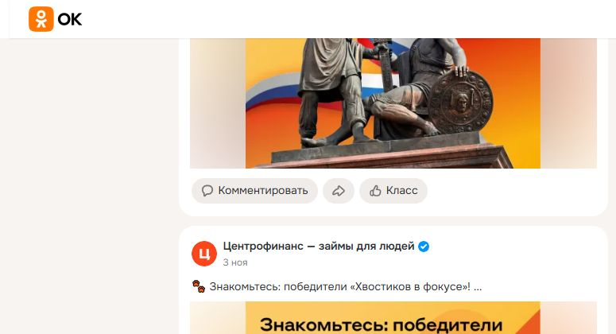
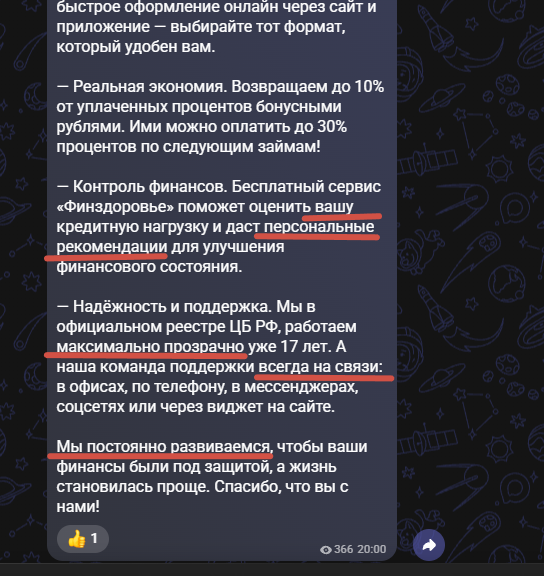

Наблюдения и предложения
Срез открытых страниц и публикаций на 18–19 ноября 2026 года. Данные внутренней аналитики не использовались.
Оформление каналов
Все каналы оформлены понятно. Во ВКонтакте — ясное название сообщества и удачная обложка. Я бы добавила в это сообщество закреплённый пост с понятным УТП и самой важной информацией о предложении.

Пример оформления: Одноклассники · 19.11.2026 Фирменный стиль
Публикации выдержаны в фирменном стиле, визуально лента выглядит хорошо.
Переход из профиля
Ссылки в описаниях Telegram, MAX и Одноклассников работают и содержат UTM-метки. Из Telegram и Одноклассников они ведут в каталог займов, из MAX — на главную страницу.
Кросспубликация
В соцсетях много одинаковых публикаций. Частично кросспостить можно, но каждой площадке нужен и свой контент. В Telegram-посте о самозанятости ссылка проходит через
vk.ru/away.php. Для каждой площадки лучше ставить прямую ссылку с собственной UTM-меткой.Полезный контент
В MAX и Telegram стоит добавить больше образовательных и полезных материалов. Их можно публиковать в обоих каналах.
Клипы ВКонтакте
Для ВКонтакте я бы включила клипы в контент-стратегию как отдельный формат.
Частота публикаций
Раньше публикации выходили каждый день, а в ноябре постов стало меньше. Я бы составила контент-план и вернулась к ежедневным публикациям.
Призыв к действию
Не во всех продающих публикациях есть призыв к действию: например, пост о преимуществах заканчивается общим обращением к подписчикам. В продающих постах я бы указывала один конкретный следующий шаг. Также включила бы в контент-план развлекательные и потенциально виральные публикации с уместным призывом к действию.
Редактура текстов
В посте о преимуществах общие обещания и фразы-клише перегружают текст. Его стоит сократить, оставить конкретную пользу и проверить численные обещания по условиям продукта.

Пример публикации в Telegram · нажмите, чтобы увеличить Конкурс
Идея конкурса интересная. В посте с итогами названы питомцы и призовые места, но нет фотографий победивших работ. Для фотоконкурса результат остаётся неочевидным.